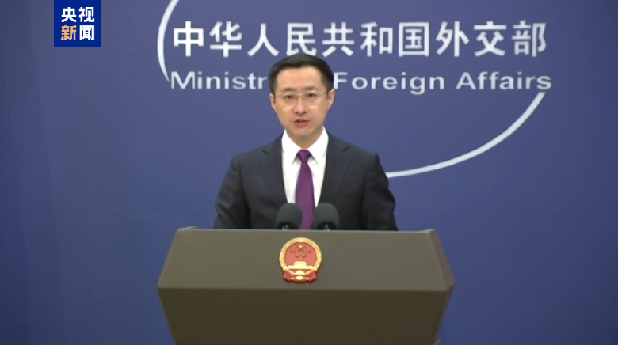
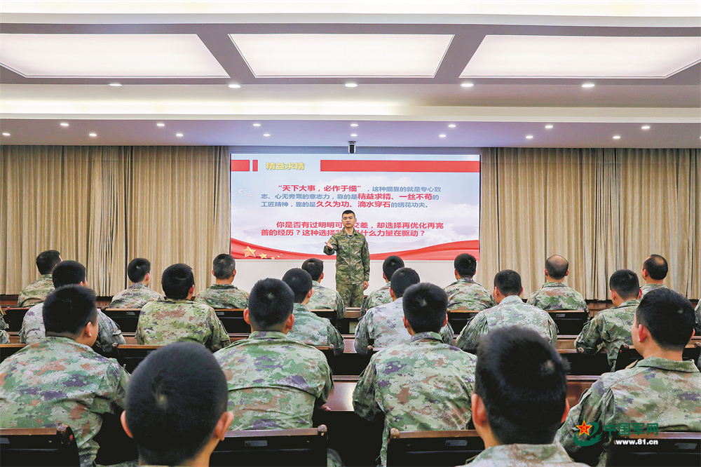

外交部：中方愿意同各方一道坚持真正的多边主义
编辑：罗萌 责任编辑：刘亮
4月7日，外交部发言人林剑主持例行记者会。林剑表示，美国滥施关税的错误做法，严重侵犯各国的正当权益，严重违反了世界贸易组织的规则，严重损害了以规则为基础的多边贸易体制，严重冲击了全球的经济秩序稳定。
外交部再回应美方所谓对等关税：必然遭到国际社会的普遍反对
编辑：罗萌 责任编辑：刘亮
林剑表示，美国以“对等”为名行霸权之实，牺牲各国正当利益，服务一己之私，将“美国优先”凌驾于国际规则之上，是典型的单边主义、保护主义和经济霸凌行径。
军营观察丨“备课之思”带来“课堂之变”
编辑：邢斯馨 责任编辑：刘亮
经过为期一年的摸索与实践，对于教育课如何瞄准“思想靶心”，该支队许多政治干部都有了更深刻的感悟。该支队党委深入调研，翻阅了许多政治干部往年的备课教案，发现有不少主题雷同的课程，教案往往“换汤不换药”。